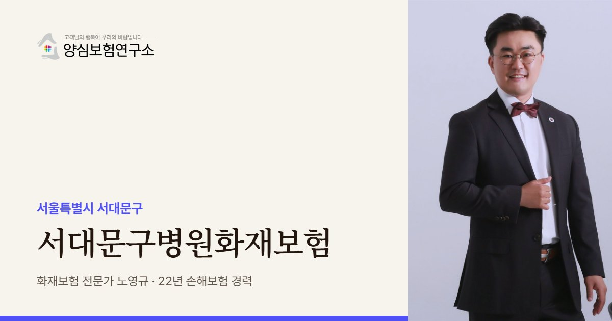

서대문구병원화재보험은 서대문구 병원·의원·치과의 화재 재산 손해와 환자 배상 문제를 한 계약 안에서 정리하는 보험입니다. 신촌 대학병원 주변처럼 식당·주점·연구실이 한 건물에 있으면 불의 출발점이 진료실 밖일 수 있어 비의료 공간을 먼저 봅니다.
서대문구병원화재보험 보장 항목
- 화재·재산: 신촌·이대 앞 대학가 피부과와 치과의 인테리어, 시술 장비
- 치과 장비: 오래 켜 두는 치과 소독기와 기공 장비, 연결된 전기 배선
- 외래 배상: 대학병원 진료 전후 대기 인원이 많은 의원에서 대피가 붐벼 생긴 사고
- 요양 병상 배상: 서대문구 요양병원 병상의 거동이 불편한 환자 대피 중 사고
서대문구병원화재보험 보험료 산정 기준과 가입 시 고려사항
- 비의료 공간: 같은 건물 식당·주점·실험실(화학 약품·가열 장비)의 층 위치
- 야간 무인 시간: 대학가 주점이 영업하는 진료 종료 뒤 건물이 비는 시간대
- 대기 인원: 신촌 대학병원 앞 의원에 외래가 몰릴 때의 대기 인원과 대피 계획
- 병상 여부: 서대문구 병원·요양병원처럼 입원 병상이나 낮병동 병상을 운영하는지

서대문은 같은 건물 안에 진료와 상관없는 공간이 무엇인지부터 봅니다. 식당, 주점, 연구실이 한 건물에 있으면 불의 출발점이 진료실 밖에 있을 수 있기 때문입니다.
서대문구 안내
서대문구, 왜 병원화재보험이 중요할까요?
서대문구병원화재보험은 서대문구의 병원·의원·치과가 불이 났을 때의 재산 손해와 환자 배상 문제를 한 계약 안에서 정리해 두는 대비책입니다. 신촌을 중심으로 대학병원과 대학가가 맞닿아 있어, 큰 병원 한두 곳이 지역 의료의 무게중심을 이루는 곳입니다.
2025년 서대문구 의료기관은 448곳, 병상은 3,742개입니다. 이 가운데 종합병원 2곳의 병상이 2,394개로 3분의 2 가까이를 차지합니다. 의원은 214곳으로 이웃 마포구의 절반 수준이어서, 입원과 중증 진료는 큰 병원이, 가벼운 외래는 주변 의원이 맡는 구조가 뚜렷합니다.
대학병원 주변에는 외래 환자와 보호자를 상대하는 의원, 약국, 식당, 편의 시설이 한 거리에 모입니다. 큰 병원 건물 안에도 병동 외에 식당, 매점, 연구실이 함께 있어, 진료실이 아닌 공간이 불의 시작점이 되기도 합니다. 2018년 신촌의 한 상급종합병원 화재도 병원 안 음식점 쪽에서 시작된 것으로 보도됐습니다.
신촌·이대 앞 대학가 상가에서는 젊은 층을 상대하는 피부과와 치과가 음식점, 주점과 한 건물을 쓰는 경우가 많고, 홍제동·가좌동 쪽 주거지에는 내과와 한의원 중심의 동네 의원이 자리합니다. 같은 구 안에서도 대학가와 주거지의 위험을 따로 봅니다.
2018.02 신촌동 한 상급종합병원 본관 3층 음식점 쪽에서 불이 나 입원 환자와 보호자, 직원 등 약 300명이 대피했습니다. (뉴스1)
주요 위험
신촌 대학병원 주변 의원은 어떤 위험을 먼저 보나요?
연구·실험 공간
화학 약품과 가열 장비를 쓰는 실험실이 같은 건물에 있으면 진료 공간과 다른 위험 기준이 필요합니다.
병원 안팎의 식당가
환자와 보호자를 위한 식당·매점 주방은 진료 시설 가까이 있는 대표적인 열원입니다.
대형병원 앞 외래 의원
큰 병원 진료 전후로 환자가 몰리는 의원은 대기 인원이 많아 대피 혼잡을 고려합니다.
대학가 주점과 같은 건물
밤늦게 영업하는 업소와 건물을 함께 쓰면 진료가 끝난 뒤의 화재에도 대비해야 합니다.
요양병원 병상
요양병원 5곳, 732병상은 거동이 불편한 환자의 대피 시간을 기준으로 따로 봅니다.
치과 기공·소독 장비
소독기와 기공 장비를 오래 켜 두는 치과는 전기 배선 부하를 점검합니다.
※ 실제 보장 여부와 한도, 면책 사항은 가입하는 상품의 약관과 병원 현황에 따라 달라집니다.
방문 상담
서대문구 직접 방문 상담
신촌 대학병원 주변과 이대 앞 상가, 홍제·가좌 주거지 의원을 직접 찾아가 건물 구성을 확인합니다. 병원 안에 입점한 의료 관련 시설도 상담할 수 있습니다.
꼭 확인할 점검 항목
서대문구 병의원은 건물 구성을 어떻게 점검하나요?
- 같은 건물의 비의료 공간식당, 주점, 연구실이 몇 층에 있는지 적어 둡니다.
- 야간 무인 시간진료가 끝난 뒤 건물이 비는 시간대를 확인합니다.
- 대기실 수용 인원외래가 몰릴 때 대기 인원을 파악해 대피 계획을 세웁니다.
- 소독·기공 장비장시간 켜 두는 장비의 전원 위치를 정리합니다.
- 병상 여부입원이나 낮병동 병상이 있는지 알려 주세요.
고객 후기
실제 계약고객 만족 사례


※ 실제 계약고객과 나눈 카카오톡 상담과 후기 일부이며, 개인정보는 가렸습니다.
지역 상담 Q&A
서대문구병원화재보험 Q&A
대학병원 바로 앞 의원인데 큰 병원 화재로 문을 닫게 되면요?
내 의원에 직접 불이 나지 않았다면 영업 손실 보상은 약관 조건이 까다롭습니다. 주변 시설 사고로 인한 휴업 손실이 담기는지 가입 전에 조건을 확인해야 합니다.
대학가 상가라 밤에 주점이 영업하는데 영향이 있나요?
건물 안 업종 구성은 화재 위험 평가에 반영됩니다. 진료가 끝난 뒤에도 보험은 계속 효력이 있으니, 무인 시간의 손해 범위를 꼼꼼히 확인하시면 됩니다.
병원 안에 입점한 약국이나 의료기기 매장도 가입할 수 있나요?
가능합니다. 입점 계약상 책임 범위와 내부 시설 소유 관계를 확인하고 목적물을 정합니다. 병원 본관의 소방 설비를 누가 관리하는지도 함께 봅니다.
홍제동 주거지 한의원도 신촌 쪽과 똑같이 설계하나요?
기본은 같지만 위험 요소가 다릅니다. 주거지 한의원은 약재와 온열 기구, 오래된 상가 배선을 중심으로 보고 대학가 의원은 건물 업종과 혼잡도를 더 봅니다.
병원 안 식당에서 난 불도 대비해야 하나요?
진료실이 아닌 공간이 불의 시작점이 되기도 해 함께 보는 편이 좋습니다. 2018년 신촌 상급종합병원 화재도 병원 안 음식점 쪽에서 시작된 것으로 보도됐습니다.
신촌 대학병원 옆 의원,
이웃 공간까지 보셨나요?
같은 건물의 식당·주점과 연구 공간까지 확인해 불의 출발점별로 대비를 나눠 드립니다.